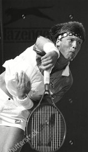
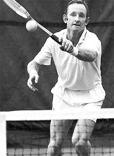

Previous: Future Trends in Tennis - Part 1 | 🏠 Classic Lessons Home | Next: Future Trends in Tennis - Part 3
Future trends in tennis part 2
Comprehensive unified tennis knowledge base — Fundamentals, Stroke Analysis, Reference Library, and more
Future Trends in Tennis:Part 2
Chris Lewit
In the first article in this series I outlined some thoughts on the possible evolution of players, playing styles, rackets and technique. Let’s continue now with some additional, more radical thoughts about the possible further evolution of training and coaching, focusing on laterality, ambidexterity and symmetry.
Laterality Training
Are players with two forehands a viable future option?
Laterality is the preference for one side of the body or the other, like being right or left handed or right or left-footed. The study of laterality also relates to the dominance of the left or right eye.
Coaches and trainers are currently exploring the effects laterality has on motor performance and technical development. In tennis, Paul Dorochenko has been a leader in this field of study. Click Here to see him training with a young Roger Federer.
Others like the Spanish coach Jofre Porta are using laterality to inform their developmental work with players. (Click Here to see my previous profile of him on Tennisplayer.) Future coaches may be able train and enhance eye dominance from a young age to improve technical development and overall sports performance.
Understanding laterally may also be a key in understanding a player’s potential to play ambidextrous tennis. I believe it may be possible to greatly enhance ambidextrous capabilities, unlocking new trends in technique on groundstrokes, serves, and even volleys.
Gene Mayer rose to third in the world playing with two hands on both sides.
Double Handed Players
Double handed players have always been part of the game, but with more ambidextrous athletes, there will likely be more double-handed players on the tour.
Double handed strokes will help create pace and also handle the pace of the future game. They also have the capacity to create short court angles, as both Gene Mayer and Monica Seles demonstrated so brilliantly in their careers. Another advantage: less muscular imbalance in the body, which can help prevent injuries.
It would be very interesting to test Gene for eye dominance and laterality as he is still actively playing and teaching. And John Yandell has offered to put us in touch. You can see more of his two-handed game in the Archives by Clicking Here.
Dual Forehand Players
Another interesting possibility is that some ambiplayers will innovate by choosing a two-forehand style, in the vein of Eugenia Koulikovskaya, a former WTA pro, and one of the few professional players to ever play with two single-arm forehands. She was ranked as high as 91 in the world.
Another example of symmetrical tennis, a top 500 men’s player with two forehands.
That could be another configuration that gains popularity in the next century and beyond, especially if sport scientists can teach how to enhance laterality and ambidexterity.
The animation shows a modern pro tour example of another ambidextrous player whose technique and footwork is symmetrical with two forehands, one on each side. His name is Cheong-Eui Kim, a Korean player who has been in the top 500 in the world.
Team Symmetry
I want to train mirror image or close to mirror image technique on both sides to maximize power and spin, with two forehands—and movement efficiency with two open to semi open stances.
Currently I’m considering starting a special project——a group of young players based in NYC who play symmetrically: Team Symmetry.


Luke Jensen could serve 130mph with either hand.
Players will have either have dual two handed forehands, or they will have dual one handed forehands. That variation would also allow players to attack the net with two forehand swinging volleys, one on each side.
In addition, I would like to train this group of players to be dual handed servers, both lefty and righty. I call them Ambiservers. As we discussed in the first article Luke Jensen proved how effective ambiserving could be.
Nicknamed Dual Hand Luke, Jensen could serve 130mph with either hand. He was a two time college All American. He won the French Open doubles title in 1993 with his brother Murphy and reached his career-high doubles ranking of World No. 6 in the same year.
I have believed for a long time now that symmetrical training could be a major future trend in technical tennis coaching. There are a lot of doubters, but I want to prove that symmetrical technique and movement training can be a viable - if not a better - approach to building high level players.
In my view, more power, spin, and better movement efficiency will come from a symmetrical teaching approach, and the body will be healthier. Forces and loads will be distributed more evenly across the muscles and joints, especially helping to reduce overuse injuries, which are very common in tennis.

Could symmetrical training make the current game look as quaint as a continental grip?
Players, parents, and coaches interested in discussing participation in the Team Symmetry Project are welcome to get in touch with me directly. (chrislewit@gmail.com.)
These are radical ideas, but I believe they are viable. We simply haven’t explored this type of systematic training yet. Remember the tennis establishment thought Bjorn Borg was a technical anomaly when he was actually leading the development of the current modern game.
Once players demonstrate that symmetrical training is possible, the current asymmetrical approach to building technique may be regarded as a quaint period in tennis history, the way we now view classic continental grip forehands from the 20th century.
While there will likely always be some athletes whose laterality predisposes them to playing with one arm (forehand and one-handed backhand), it is quite possible this stroke combination will become less common on tour.
Note
The predictions in this article are meant to provoke thought and discussion. I look forward to getting feedback and other ideas from the Tennisplayer community at large. Please share your own predictions in the Forum. (Click Here.)

Chris Lewit, former #1 for Cornell and Pro Circuit player, has coached numerous top 10 nationally ranked juniors and is a leading coach, educator, and author. He has written two best-selling books, The Secrets of Spanish Tennis and The Tennis Technique Bible.
Chris runs a popular high performance summer tennis camp in the beautiful mountains of Vermont and coaches players world-wide through his virtual school, CLTA Online (CLTA.teachable.com).
Chris also produces a weekly high performance tennis video talk show and podcast, The Prodigy Maker Show, which is available on Apple Podcasts and all other podcasting directories. All shows can be accessed at ProdigyMaker.com.
Check out Chris's blog, also at ProdigyMaker.com for free articles on high performance junior development and Spanish training. Learn about his camp at ChrisLewit.com or visit the online academy at CLTA.teachable.com
Source: tennisplayer.net archive — Future Trends in Tennis - Part 2.docx (John Yandell teaching library, 2002-2022). Extracted and rendered as HTML for Tennis Future Lab.